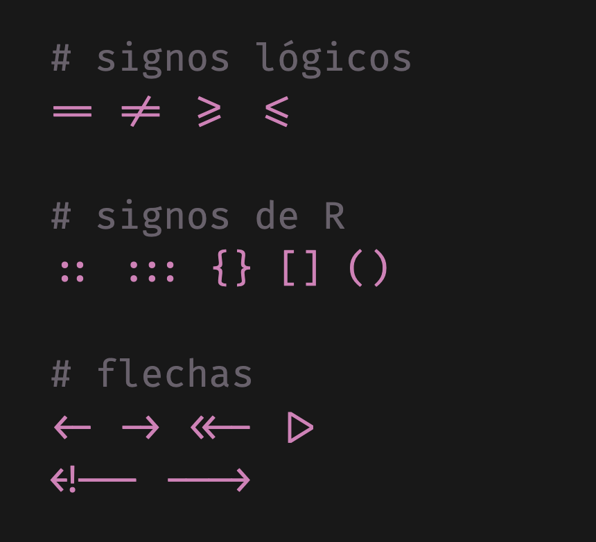
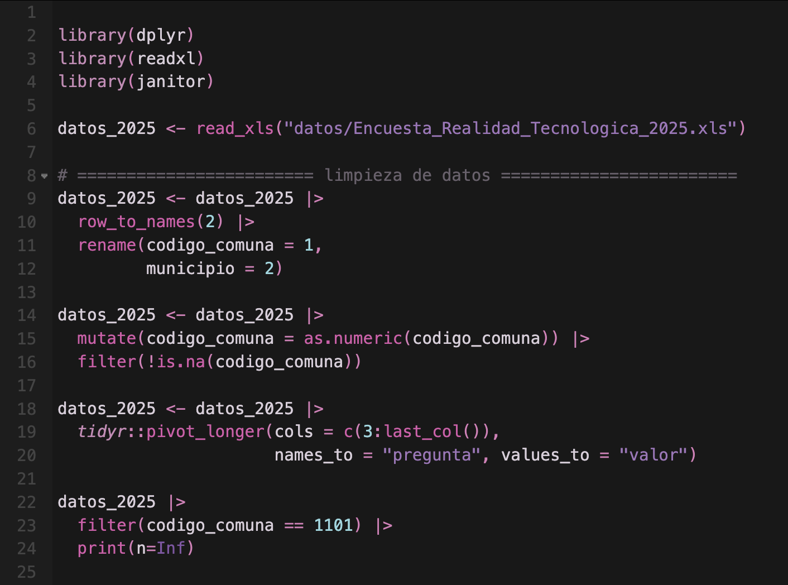
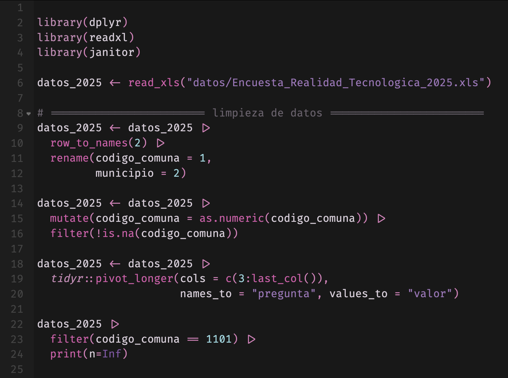
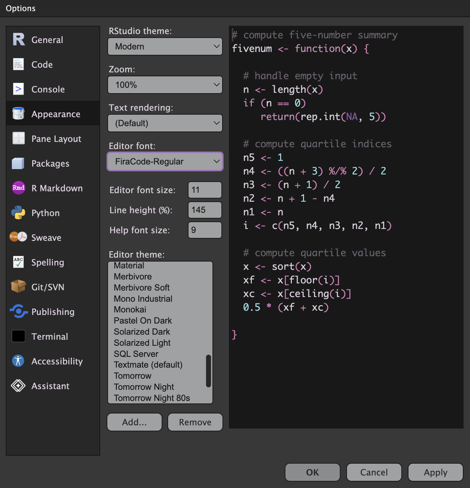

Tipografías lindas para programar en R: Fira Code
16/6/2026
Fira Code es una tipografía muy bonita para programar. Su característica principal es que usa las ligaduras, una característica de la tipografía que une dos o más caracteres en un solo símbolo adaptado, para mostrar los símbolos usados en programación de forma más atractiva.

Lo más destacable es que convierte el
símbolo del conector o pipe (|>) en un triangulito, y a la
flecha de asignación (<-) en una flecha de verdad.
Antes usaba la tipografía Menlo para programar, pero encuentro que Fira Code es más legible gracias a sus serifas (remates en las puntas de los caracteres), y además por los ajustes de variantes de símbolos, ajuste de la altura de los caracteres según sus adyacentes, y otros detalles que la hacen una tipografía monoespaciada muy legible.
Antes

Después

Instala Fira Code siguiendo estas instrucciones de instalación y luego actívala en RStudio en Global Options y luego Appearance.

También está disponible en Google Fonts.
Si te gustó el tema moradito oscuro que uso en RStudio, lo puedes encontrar acá:
Tema de RStudio

Más publicaciones